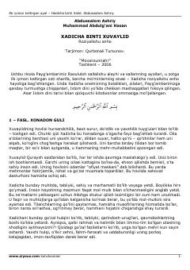

HBIslom tarixidagi ilk mo'min ayol — Hadicha roziyallohu anhoning hayoti va ibratli yo'li.
Ushbu risola Payg'ambarimiz Muhammad sollallohu alayhi va sallamning ayollari, ilk iymon keltirgan zoti sharifa Hadicha roziyallohu anhoning hayotiga bag'ishlangan. Unda onamizning bolaliklari, oilalari, savdo-sotiqdagi faoliyatlari va Islom dini yo'lida chekkan mashaqqatlari hikoya qilingan. Kitob keng kitobxonlar ommasiga mo'ljallangan.